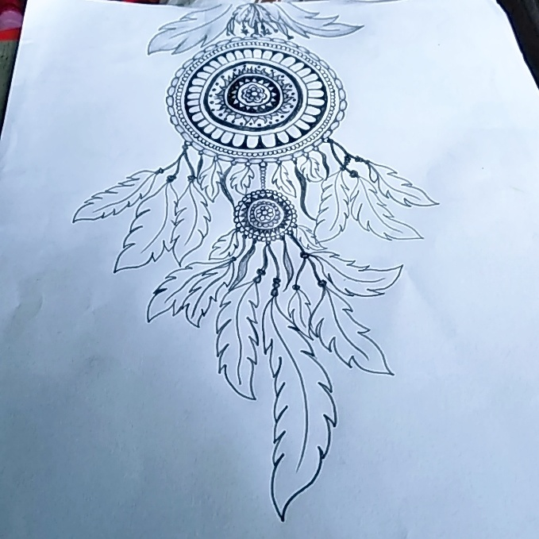
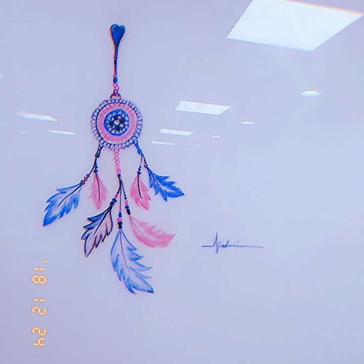
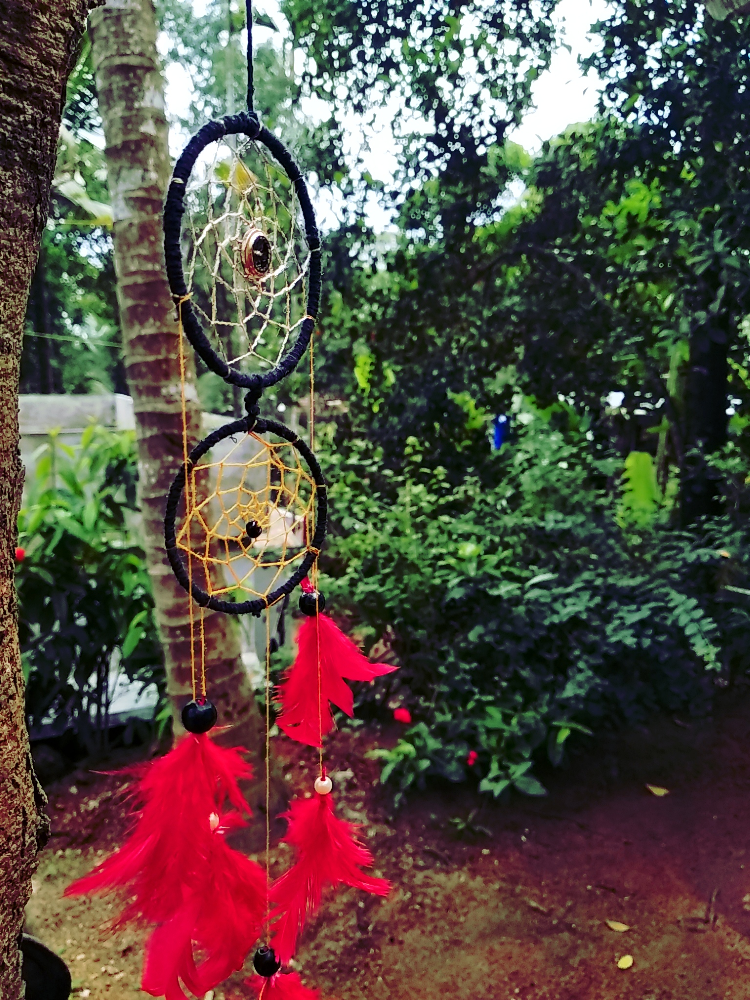
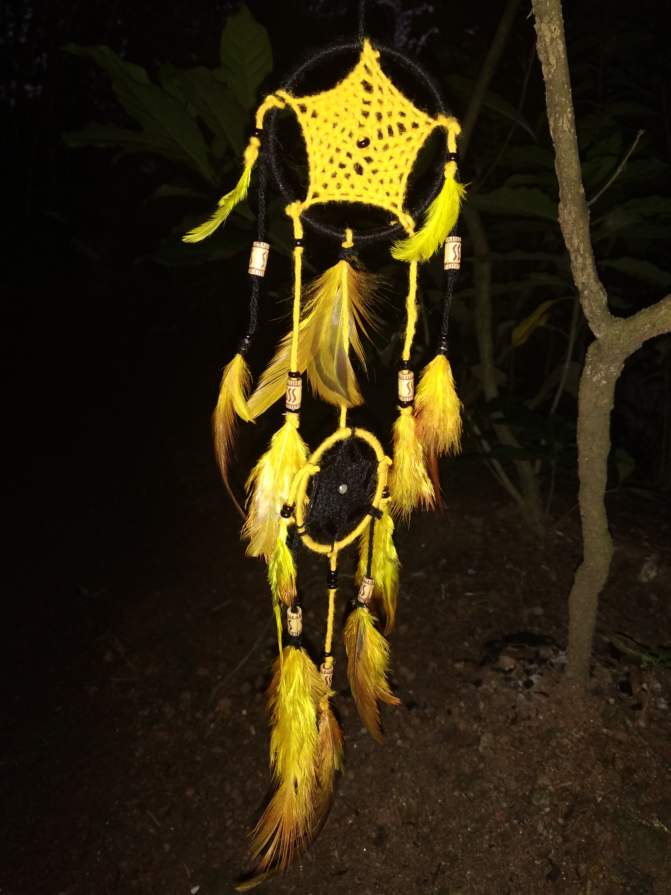
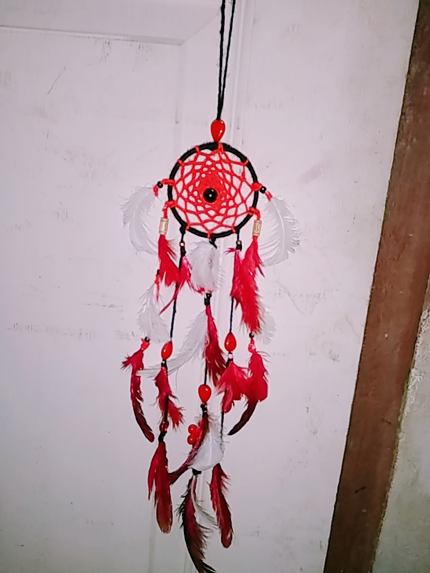

Dream Catchers
You’ve probably heard about dream catchers. You may even have one or seen one hanging from a tree branch or on a wall. But I bet there’s a lot about dream catchers that you probably don’t know. Let's explore their origins, legends and how they're used today.People mostly use them for decoration today but dream catchers have a long history among First Nations people. They were given to children to hang over their beds to ward off bad dreams.
What is a dream catcher?
Where did dream catchers come from?
Explorers reported that the Ojibwa people were using dream catchers to protect children while they slept — they were sometimes called "Sacred Hoops." Dream catchers have also been used by Cree and other First Nations people.One legend tells the story of a chief whose child becomes sick with a fever that causes terrible nightmares. A medicine woman makes a dream catcher by copying the pattern of a spider web. Instead of catching flies, the dream catcher will catch bad dreams.
When nightmares came for the child, they were caught in the strands of sinew. But good dreams were able to pass through the web and follow the feather down to the child. In the morning, the sun would hit the dream catcher and burn away the bad dreams.
My Dream Catchers




